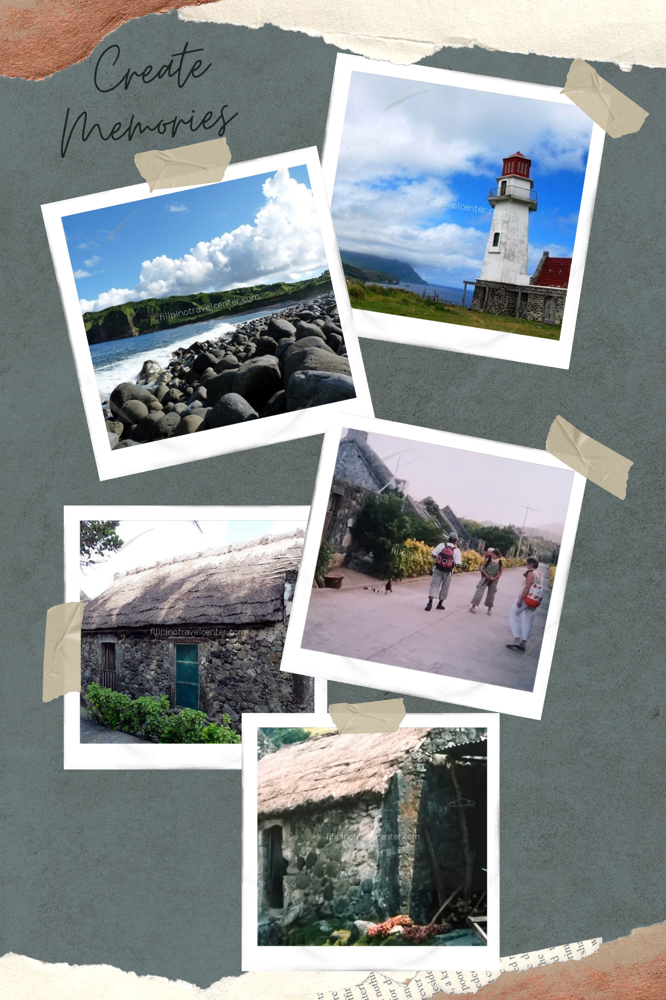
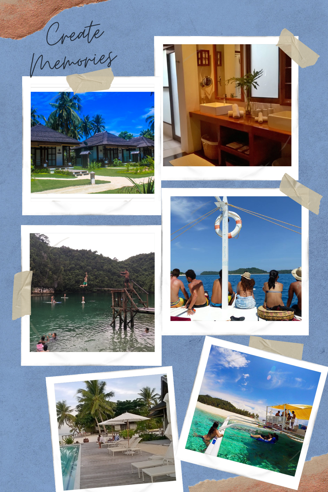

PORTRAITS
Enjoy the little things and make us it happen.

BATANES

SIARGAO

Here in Easy Scape, we will asure your safety and everyone will enjoy.
About Batanes:
REMINDER: Batanes is located in the nothernmost region of Luzon, where lodgings are simple and rustic. Hardly any modern,
transportation exist, thus a jeepney wii be used for the tour. Travelers may experience minor inconvenience such as lack of hot/cold shower, aircon,
transfer, modern restaurant facilities, etc. But we always try our best to showcase all the major highlights of the province with the tour coordinator making food, coordinationg transfers and accommodation in advance in order to maximize your time in the island.
FROM: 10,500 pesos per person, based on 2 persons sharing 1 room
<
DURATION: 4 days and 3 nights.
INCLUSIONS:
* 4 days and 3 nights aircondition accommodation choices of Batanes Seaside, Amboy Hometel, Villa Hontomin, Batanes Resort, Nataniel's, Dive Batanes and Midtown Inn
* Daily Breakfast, Lunch and Dinner.
* Private Tour Guide
* Private Tour Transportation
* Batan North Tour
* Batan South Tour
* Sabtang Island Tour
* Boat Ride (going to Sabtang Island)
*Permits, Registration Fee and Entrance Fee and taxes.
In the South-eastern sweeping side of Siargao, Isla Cabana sits idly waiting for you to soak and slow down. Equipped with ref, hot water and veranda you immediately feel exotic with its white sand beachfront. The resort offers 2 swimming pools, gym, wifi and restaurant overlooking the tranquil water. The famous cloud 9 Broadwalk for surfing only a 20 minutes bike ride away.
FROM: 11,520 peso per person, based on 2 persons sharing 1 superior Cabana.
DURATION: 3 days and 2 nights.
INCLUSION:
* Private roundtrip Sayak Airport, Siargao transfers to/from the resort
* 3 days and 2 nights airconditioned accommodationin superior Cabana (no beachview)
* Breakfast
* Whole daytour Island Hopping on Day 2, docking & Island entrance fee, drinking wate and lunch.
* Free WiFi in the room, Beach Restobar, Pool Area and Lobby Area
* Fre use of Ocean Kayaks for 30 minutes to 1 hour, pre-arranged at the front office.
* Free use of Gym and Fitness Equipment for 1 hour, pre-arranged at the front office.
* Use of resort amenities.
TIP: The Caramoan Island can perfectly be combined with exploring Donsol Bay. Prestine Caramoan Peninsula in camarines Sur offer many exotic Philippine islet off its coast. They were used for the TV series "Survivors".
The resort's welcoming cabanas offer essential modern amnities including free satellite internet access. The infinity pool give a scenic look out over the horizon that compensates for every step uphill. Private white-sand beach with a coral encrusted reef, which you can call yours during your luxury exotic Philippine vacation.
FROM: 12,750 peso per person.
DURATION: 4 days and 3 nights.
INCLUSIONS:
* 3nights accommodation in Hilltop Cabana with private toilet and shower with bathroom amenities.
* Welcome drinks and snacks
* Daily breakfast
* Lunch on day 2 and 3
*Free of charge use of resort facilities including kayaks and snorkeling gear
* Use of non-Motorized Marine Sports Equipments
* Island Hopping Tour on Day 2 (Katanhawan Island, Pitogo Bay, Tinago Cove, Tayak Lake, Mutakad Island and Labos Island)
* Island Hopping Tour on Day 3 (Sabitang Laya, Covitas and Manlawi Sandbar).
Enjoy the little things and make us it happen.